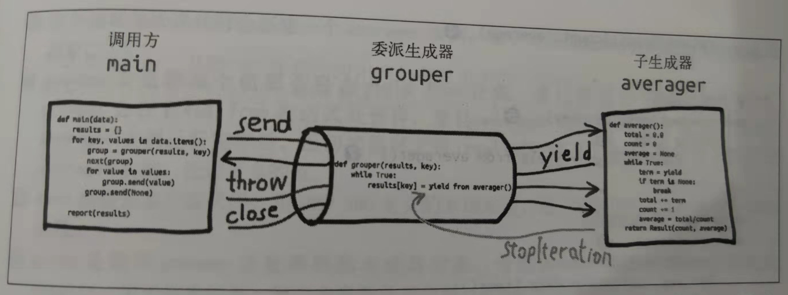

25 Python协程知多少¶

从概念上来说，我们都知道多进程和多线程，而协程其实是在单线程中实现多并发。从句法上看，协程与生成器类似，都是定义体中包含yield关键字的函数。区别在于协程的yield通常出现在表达式的右边：datum = yield。这一下就让初学者瞬间觉得yield关键字不香了，本来以为yield就是简简单单的暂停执行顺手返回个值，结果还能放右边？
从生成器到协程¶
先看一个可能是协程最简单的使用示例：
>>> def simple_coroutine():
... print("-> coroutine started")
... x = yield
... print("-> coroutine received:", x)
...
>>> my_coro = simple_coroutine()
>>> my_coro
<generator object simple_coroutine at 0x0000019A681F27B0>
>>> next(my_coro)
-> coroutine started
>>> my_coro.send(42)
-> coroutine received: 42
Traceback (most recent call last):
File "<input>", line 1, in <module>
StopIteration
之所以yield可以放右边，是因为协程可以接收调用方使用.send()推送的值。
yield放在右边以后，它的右边还能再放个表达式，请看下面这个例子：
def simple_coro2(a):
b = yield a
c = yield a + b
my_coro2 = simple_coro2(14)
next(my_coro2)
my_coro2.send(28)
my_coro2.send(99)
执行过程是：
调用next(my_coro2)，执行yield a，产出14。
调用my_coro2.send(28)，把28赋值给b，然后执行yield a + b，产出42。
调用my_coro2.send(99)，把99赋值给c，协程终止。
由此得出结论，对于b = yield a这行代码来说，= 右边的代码在赋值之前执行。
在示例中，需要先调用next(my_coro)启动生成器，让程序在yield语句处暂停，然后才可以发送数据。这是因为协程有四种状态：
‘GEN_CREATED’ 等待开始执行
‘GEN_RUNNING’ 解释器正在执行
‘GEN_SUSPENDED’ 在yield表达式处暂停
‘GEN_CLOSED’ 执行结束
只有在GEN_SUSPENDED状态才能发送数据，提前做的这一步叫做预激，既可以调用next(my_coro)预激，也可以调用my_coro.send(None)预激，效果一样。
预激协程¶
协程必须预激才能使用，也就是send前，先调用next，让协程处于GEN_SUSPENDED状态。但是这件事经常会忘记。为了避免忘记，可以定义一个预激装饰器，比如：
from functools import wraps
def coroutine(func):
@wraps(func)
def primer(*args, **kwargs):
gen = func(*args, **kwargs)
next(gen)
return gen
return primer
但实际上Python给出了一个更优雅的方式，叫做yield from，它会自动预激协程。
自定义预激装饰器和yield from是不兼容的。
yield from¶
yield from相当于其他语言中的await关键字，作用是：在生成器gen中使用yield from subgen()时，subgen会获得控制权，把产出的值传给gen的调用方，即调用方可以直接控制subgen。与此同时，gen会阻塞，等待subgen终止。
yield from可以用来简化for循环中的yield：
for c in "AB":
yield c
yield from "AB"
yield from x表达式对x做的第一件事就是，调用iter(x)，从中获取迭代器。
但yield from的作用远不止于此，它更重要的作用是打开双向通道。如下图所示：

这个图信息量很大，很难理解。
首先要理解这3个概念：调用方、委派生成器、子生成器。
调用方
说白了就是main函数，也就是众所周知的程序入口main函数。
# the client code, a.k.a. the caller def main(data): # <8> results = {} for key, values in data.items(): group = grouper(results, key) # <9> next(group) # <10> for value in values: group.send(value) # <11> group.send(None) # important! <12> # print(results) # uncomment to debug report(results)
委派生成器
就是包含了yield from语句的函数，也就是协程。
# the delegating generator def grouper(results, key): # <5> while True: # <6> results[key] = yield from averager() # <7>
子生成器
就是yield from语句右边跟着的子协程。
# the subgenerator def averager(): # <1> total = 0.0 count = 0 average = None while True: term = yield # <2> if term is None: # <3> break total += term count += 1 average = total/count return Result(count, average) # <4>
这比术语看着舒服多了。
然后是5条线：send、yield、throw、StopIteration、close。
send
协程在yield from表达式处暂停时，main函数可以通过yield from表达式把数据发给yield from语句右边跟着的子协程。
yield
yield from语句右边跟着的子协程再把产出的值通过yield from表达式发给main函数。
throw
main函数通过
group.send(None)，传入一个None值，让yield from语句右边跟着的子协程的while循环终止，这样控制权才会交回协程，才能继续执行，否则会一直暂在yield from语句暂停。StopIteration
yield from语句右边跟着的生成器函数返回之后，解释器会抛出StopIteration异常。并把返回值附加到异常对象上，此时协程会恢复。
close
main函数执行完以后，会调用close()方法退出协程。
大体流程搞清楚了，更多的技术细节就不继续研究了，有时间的话，在以后的Python原理系列中再学习吧。
yield
from经常与Python3.4标准库里的@asyncio.coroutine装饰器结合使用。
协程用作累加器¶
这是协程的常见用途，代码如下：
def averager():
total = 0.0
count = 0
average = None
while True: # <1>
term = yield average # <2>
total += term
count += 1
average = total/count
协程实现并发¶
这里例子有点复杂，源码地址是：
https://github.com/fluentpython/example-code/blob/master/16-coroutine/taxi_sim.py
核心代码片段是：
## BEGIN TAXI_PROCESS
def taxi_process(ident, trips, start_time=0): # <1>
"""Yield to simulator issuing event at each state change"""
time = yield Event(start_time, ident, 'leave garage') # <2>
for i in range(trips): # <3>
time = yield Event(time, ident, 'pick up passenger') # <4>
time = yield Event(time, ident, 'drop off passenger') # <5>
yield Event(time, ident, 'going home') # <6>
# end of taxi process # <7>
## END TAXI_PROCESS
def main(end_time=DEFAULT_END_TIME, num_taxis=DEFAULT_NUMBER_OF_TAXIS,
seed=None):
"""Initialize random generator, build procs and run simulation"""
if seed is not None:
random.seed(seed) # get reproducible results
taxis = {i: taxi_process(i, (i+1)*2, i*DEPARTURE_INTERVAL)
for i in range(num_taxis)}
sim = Simulator(taxis)
sim.run(end_time)
这个示例说明了如何在一个主循环中处理事件，以及如何通过发送数据驱动协程。这是asyncio包底层的基本思想。使用协程代替线程和回调，实现并发。